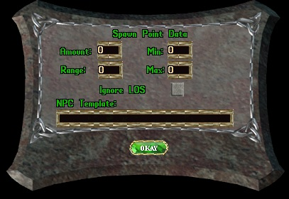

Setting-up
a Spawn Point:
Spawn points are invisible. Use the .info command to insure your
character has the seeinvisitems privilege enabled. Use the
create command to create a spawn point, .create spawnpoint and target
the location where you want to place it. Spawn points appear as small
crey figures. They are set as not movable. So there is no need to lock
them down.
Use (double-click) the spawn point to open its configuration gump.
The
spawn point gump:
The spawn point gump is relatively straightforward.
It has six settings that you will use to configure the NPC your spawn
point will spawn. They are Amount, Range, Min, Max Ignore LOS, and NPC
Template.

Here are the details for each setting:
Amount: The amount of the NPC you want to spawn.
Range: The maximum distance from the spawn point to create the
NPC.
Min: The minimum time, in minutes, between spawning an NPC.
Max: The maximum time, in minutes, between spawning an NPC.
Ignore LOS: Check this box and the spawn point will not perform
a line of sight check between the spawn point and the location where
the NPC will spawn.
NPC Template: The name of the NPC to spawn, as it appears in
the npcdesc.cfg file.
If you set the Amount to more than 1 NPC to spawn, the spawn point
will spawn each NPC one at a time until Amount has been reached, based
upon the Min and Max settings. There are situations when you might
want the spawn point to ignore line of sight, eg. spawning undead in a
cemetary where you might have headstones and other LOS obstructions.